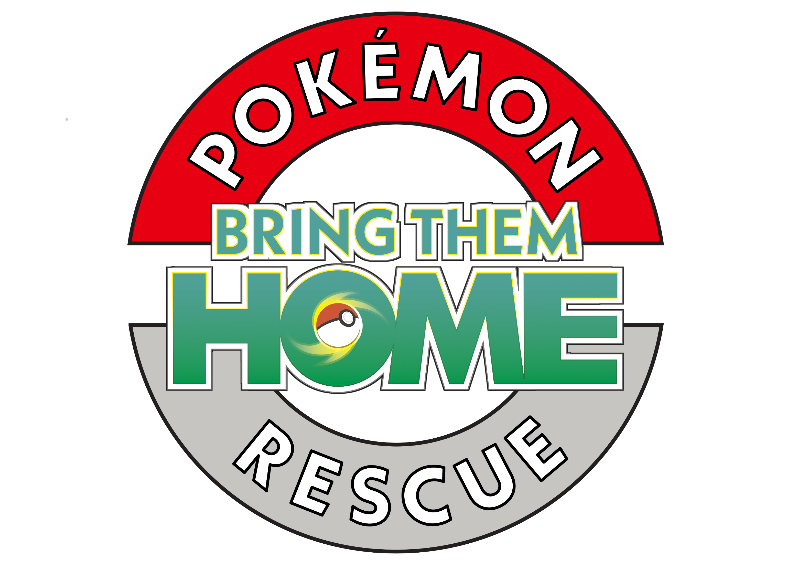
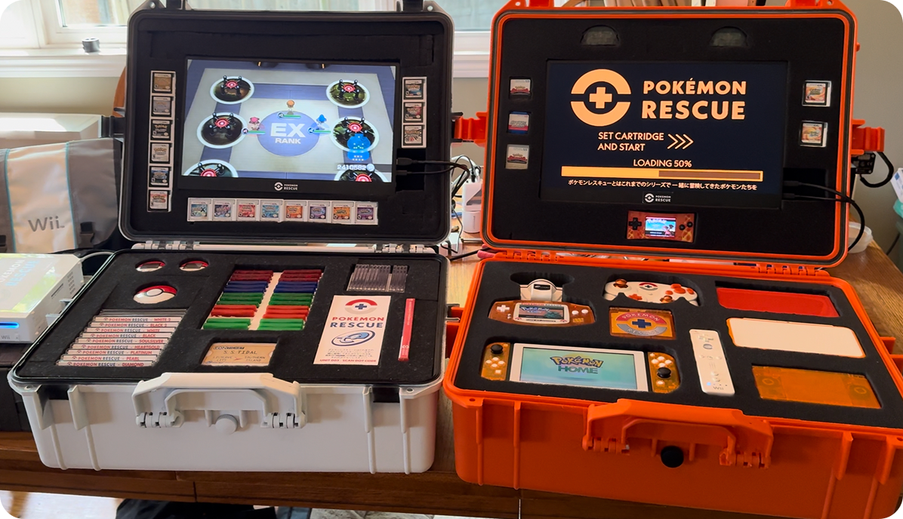
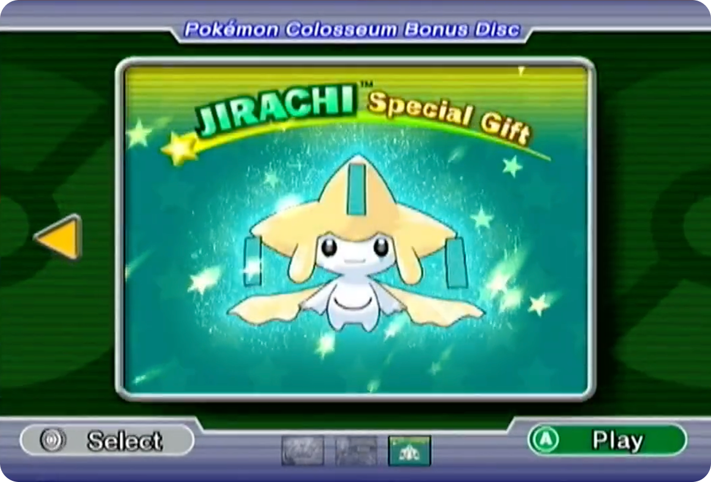
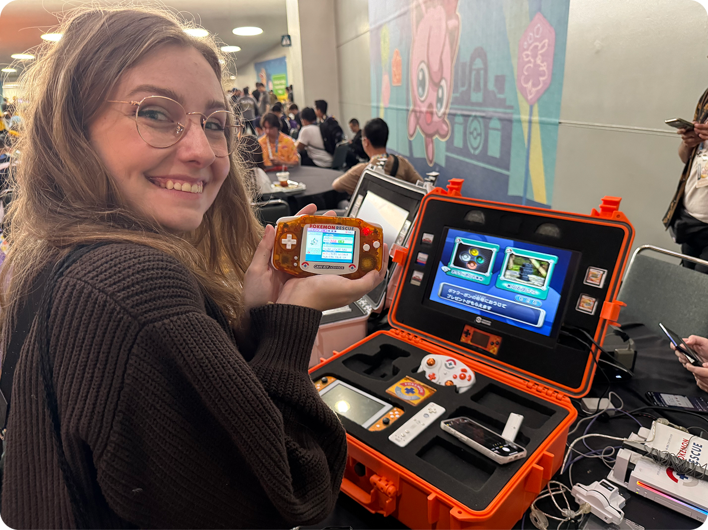
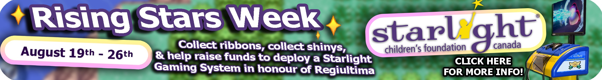

Pokémon Bank closes on February 25th, 2027. After that, there may be no way to bring Pokémon from Generation 3-7 or Generation 1-2 Virtual Console into Pokémon HOME. Please see this Tweet for more info, or continue reading below.

Pokémon Rescue is a fan project run by brothers Professor Rex & Professor Tops that helps trainers bring Pokémon they had captured in older generations of Pokémon games up to the modern-day.
Pokémon from as far back as Pokémon Ruby & Sapphire actually have an official pathway to be brought all the way up to the Nintendo Switch and even be used in the recently released Pokémon Champions.
So our goal is to help players “rescue” Pokémon they’ve created special memories with from the older games to the newer ones.
The biggest hurdle that stops many players from being able to do this themselves is the whole load of hardware that is required to make the move.
If someone wanted to transfer a Pokemon from their childhood copy of Emerald they would need, at a minimum, an Nintendo DS or DS Lite, a copy of Pokémon Diamond, Pearl, Platinum, Heartgold or Soulsilver, a Nintendo 3DS with Pokémon Bank, and PokéTransporter installed (both of which are no longer available on new systems through the e-shop), a copy of Pokémon Black, White, Black 2, or White 2, and a device to access Pokémon HOME.
In the current market (July 2026) that would cost most players over $500 in systems & game cartridges alone.
So we have amassed everything that could ever be needed to rescue any Pokémon from any game that has a pathway to Pokémon HOME.
Our team then offers trainers help through each step of the transfer process right up to the final jump to Pokémon HOME where the Pokémon can move between switch titles & even be transferred into the mobile version of “Pokémon Champions”

The other goal of the Pokémon Rescue Project is to bring players access to old event Pokémon they may have missed out on such as the Wishmaker Jirachi, or Poketopia Magmortar! We have collected everything that could ever be needed to track down nearly every repeatable Pokémon. A list of everything we have collected can be found here: Everything you need to catch em’ all

Thus far the Pokémon Rescue Project has travelled to California, Wisconsin, Toronto, and London England but we are looking to seek out many more opportunities to help Pokémon fans bring their cherished Pokémon up to the modern era!

{kind=link}